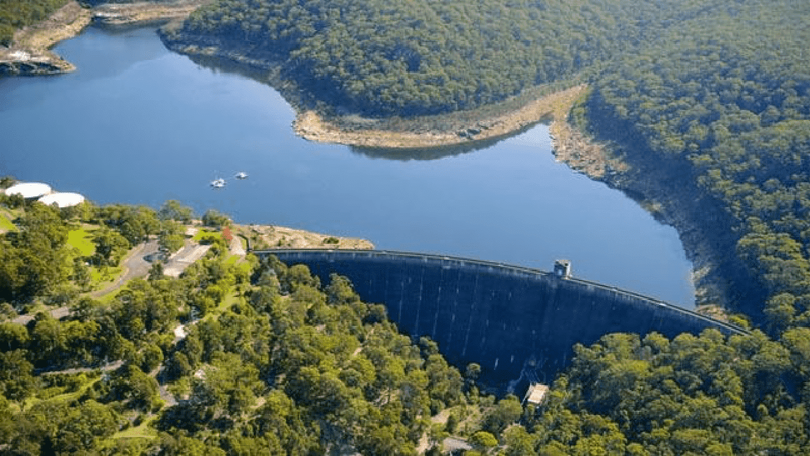

OVERVIEW
This platform is aimed for you to learn and explore more about the correct disposal of waste. What are the drawbacks if the waste is not disposed correctly and how will it impact our environment and the catchments? In order to make your learning experience more interesting and to be able to have fun at the same time while you are learning we have introduced quizzes and games. So, what are you waiting for? Are you ready to explore??? Have fun while wracking your brains!!!

Popularise knowledge of sewarage system, with the hope that more people pay attention to the classification of sewage wast and reduce the public burden while maintaining ecological balance
“Sharks in Suits”
- Made in Monash with MIT/MBIS/MNS
- An internaional cross cultural team
- Creative, Energetic, Compatible
- Enjoy the whole process